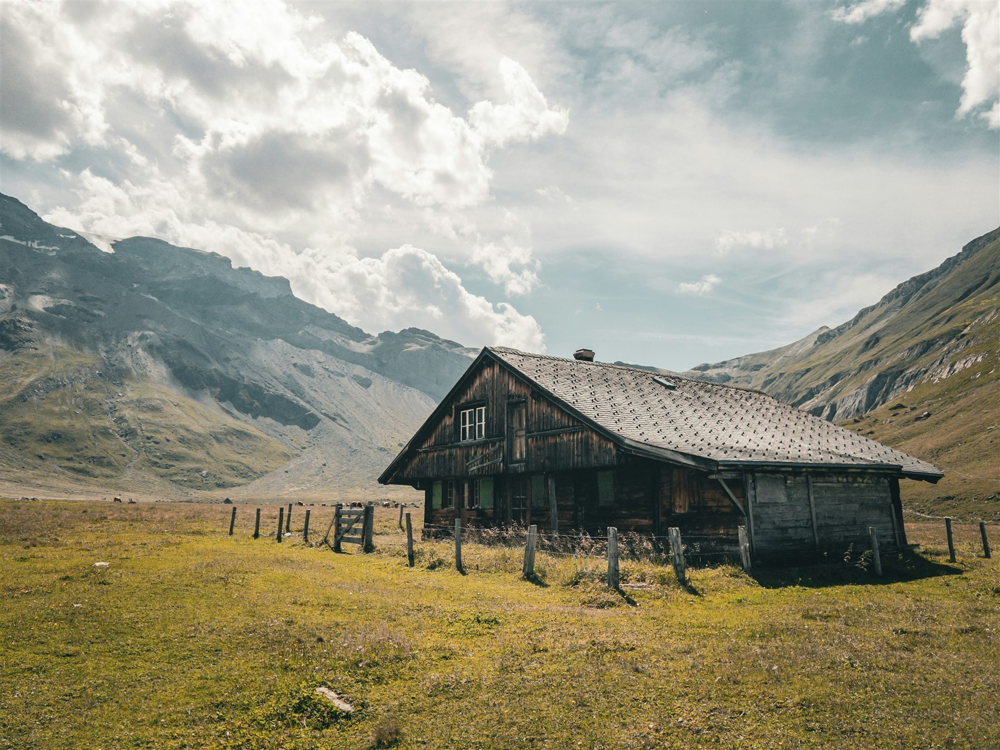
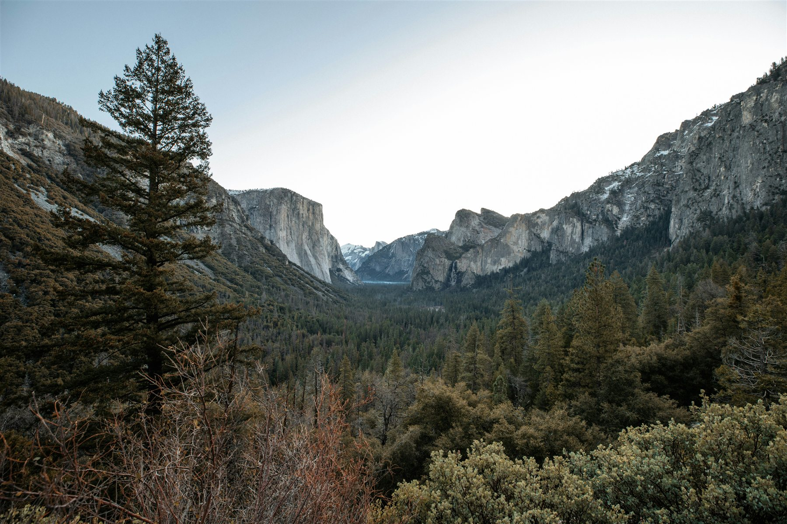
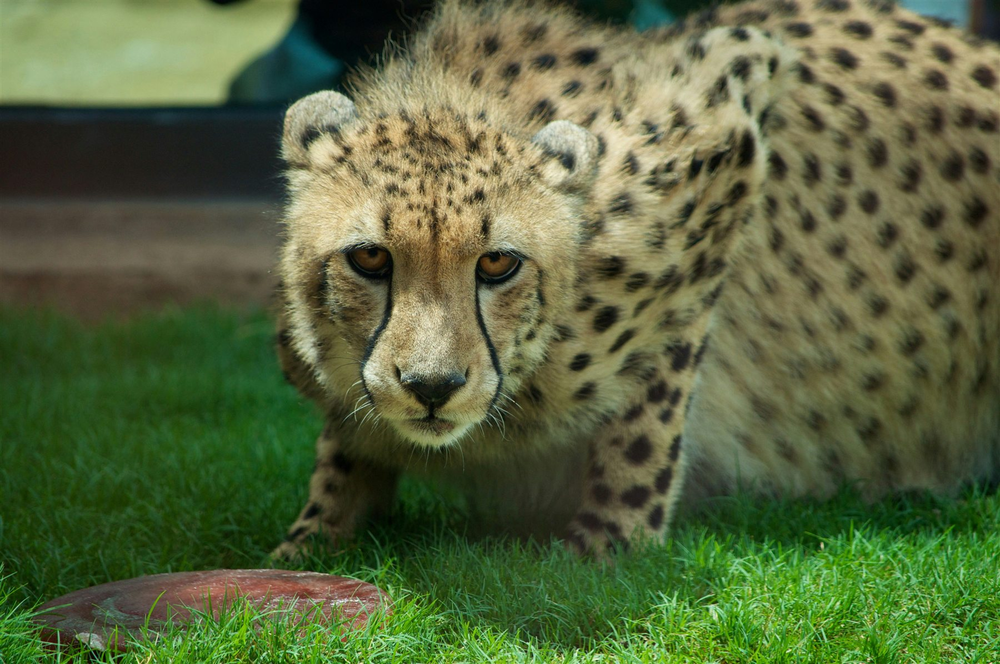
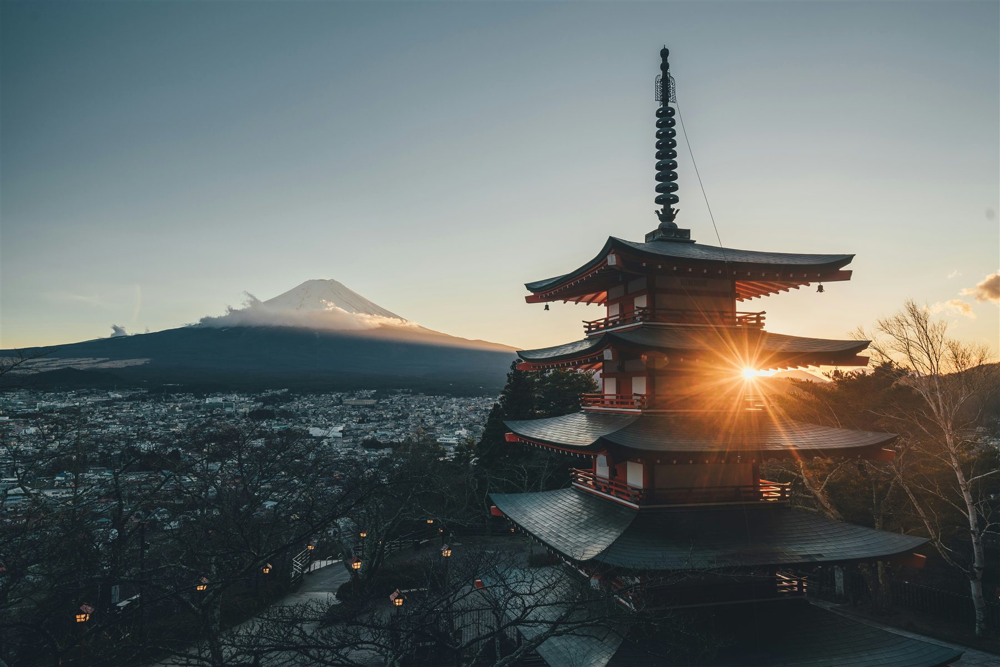
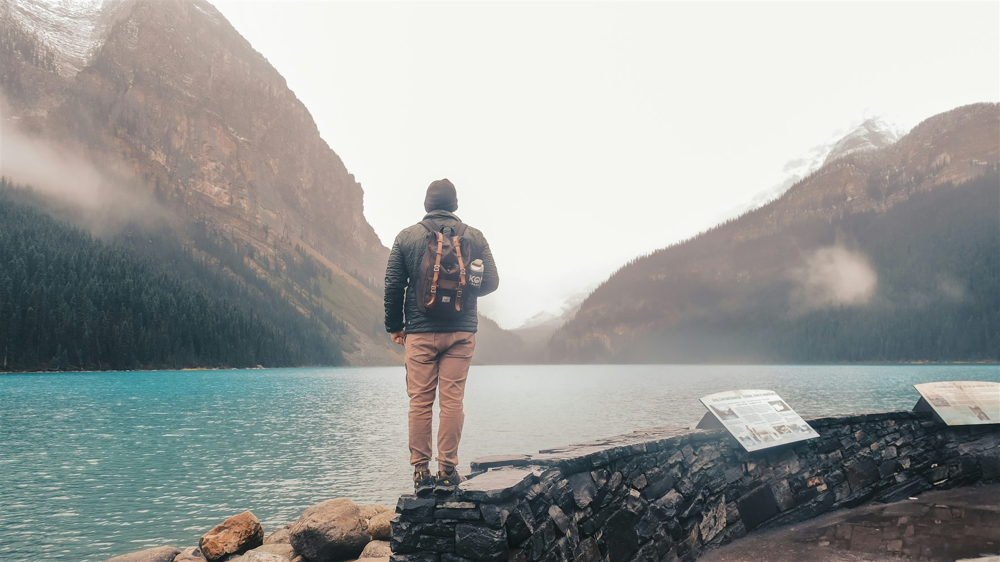

Lonely Life at the
BaltimoreNature Story · 2026
BaltimoreNature Story · 2026



We sincerely believe photography should hold the feeling of a moment long after it has passed.
Explore Only Visual Stories Through Our Creative Approach. Captured With Curiosity And Precision, Every Frame Turns A Fleeting Moment Into Something Timeless.
EXPLORE MORE


Stillness gives every landscape room to reveal its most honest details.